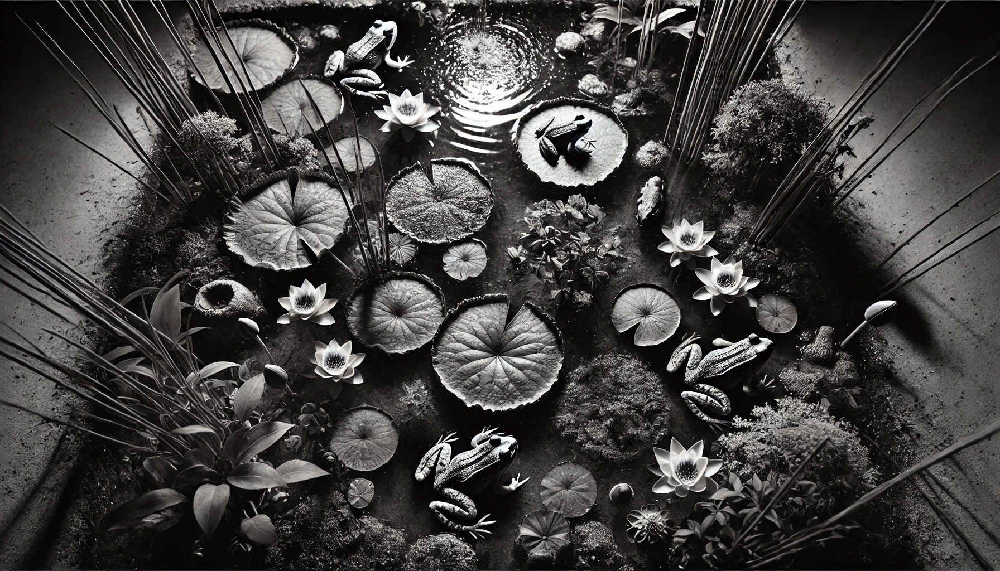

La nuit dévoile ses secrets à Champ-Pittet.
Découvrez la magie de la nuit lors de notre événement d'observation dans la réserve naturelle. Sous un ciel étoilé, plongez au cœur d'une nature préservée où les murmures de la faune nocturne et le doux clapotis de l'eau créent une atmosphère enchanteresse. Accompagnés par des guides passionnés, vous aurez l'opportunité unique d'observer des espèces rares. Une soirée qui mêle découverte, émerveillement et respect de l'environnement.
03 septembre 2027
22h - 04h30